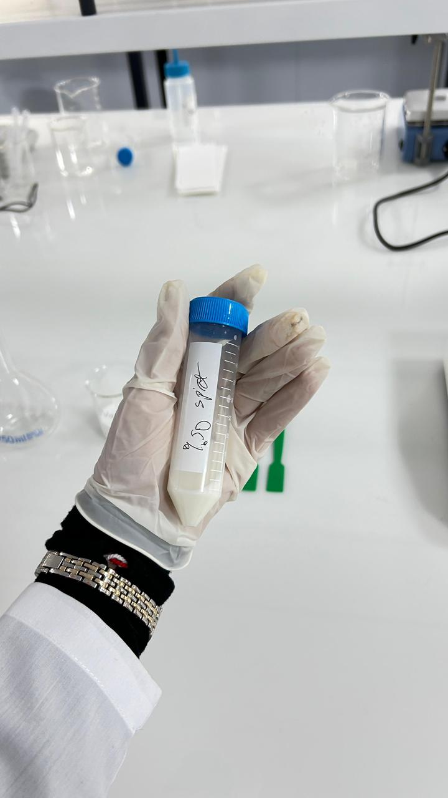
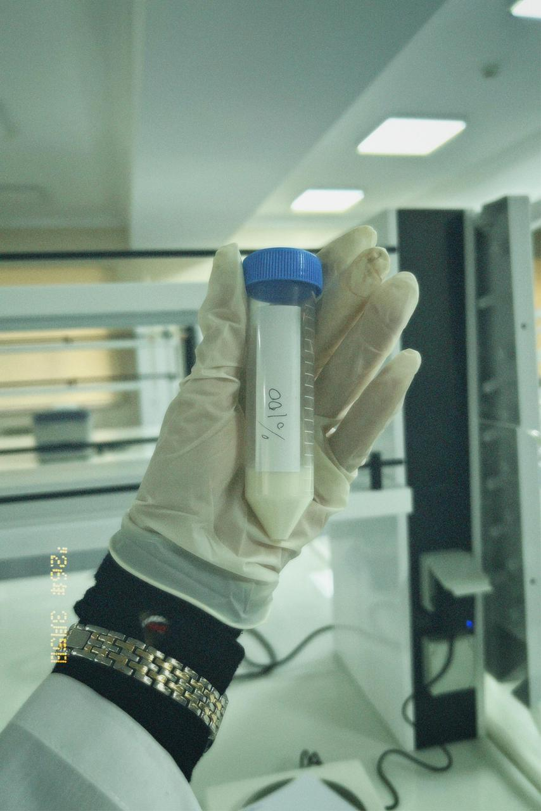

Reaktivlərin Hazırlanması və Titrləmə
Qida analitikasının ən fundamental mərhələlərindən biri reaktivlərin düzgün hazırlanması və titrləmə prosesinin dəqiq aparılmasıdır. Bu tədqiqatda müxtəlif konsentrasiyalı məhlulların hazırlanması, indikatorlardan istifadə və pH müəyyənləşdirilməsi prosesi ətraflı şəkildə araşdırılmışdır.
Reaktivlərin Hazırlanması
Analiz prosesinin ilk mərhələsində müxtəlif konsentrasiyalı məhlullar hazırlanır. Bu iş zamanı indikatorlardan istifadə olunur — onlar məhlulun kimyəvi xüsusiyyətlərini vizual olaraq ortaya qoyur. Hər bir reaktiv laboratoriya standartlarına uyğun ölçülür, çəkilir və steril şəraitdə qarışdırılır.


Fərqli konsentrasiyalarda hazırlanmış nümunə məhlulları — steril sınaq şüşələrində saxlanılır
Qırmızı Kələm İndikatorunun Tətbiqi
Təcrübədə qırmızı kələm ekstraktı indikator kimi tətbiq edilərək mühitin pH səviyyəsi təyin edilmişdir. Qırmızı kələm antosiyaninlər ehtiva etdiyindən pH dəyişikliklərinə son dərəcə həssas reaksiya verir: turşu mühitdə qırmızı-çəhrayı, neytral mühitdə bənövşəyi, qələvi mühitdə isə yaşıl-sarı rəng alır.
Mikrobioloji Təhlükəsizlik və Yekun
Hazırlanmış nümunələr steril şəraitdə saxlanılmış və analiz edilmişdir. Aparılan tədqiqat nəticəsində qida mühitində zərərli mikroorqanizmlərin inkişaf riski minimuma endirilmişdir. Qırmızı kələm indikatoru ilə aparılan pH təyini nəticələrin etibarlılığını əhəmiyyətli dərəcədə artırmışdır.
Bu yanaşma qida təhlükəsizliyinin təmin olunması baxımından mühüm əhəmiyyət daşıyır. Düzgün pH nəzarəti qidanın raf ömrünü uzatmaqla yanaşı, istehlakçı sağlamlığını da qoruyur.
Tədqiqatın Əsas Nəticələri
- ✅ Reaktivlər standarta uyğun hazırlanmış və dəqiq titrləmə aparılmışdır
- ✅ Qırmızı kələm indikatoru pH təyinini uğurla həyata keçirmişdir
- ✅ Nümunələr steril saxlanılmış, mikrobioloji risk sıfıra endirilmişdir
- ✅ Metod qida təhlükəsizliyi standartlarına tam uyğundur